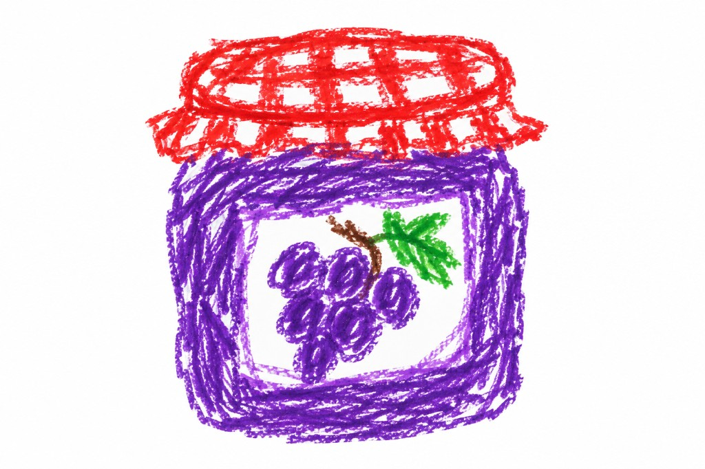

Marmellata di uva nera
Ingredienti
- 1 kg di uva nera (sgranata)
- 300 g di zucchero bianco o di canna integrale
- 1 limone spremuto
Preparazione
Stacca gli acini dal raspo.
Sciacqua gli acini delicatamente con acqua corrente, togli quelli non perfettamente integri e scolali.
Per liberare gli acini facilmente dai semi, mettili interi in una pentola, aggiungi uno o due bicchieri d'acqua e portali a bollore, rimestandoli e schiacciandoli delicatamente.
Quando gli acini sono leggermente ammorbiditi, passali nel passaverdura a buchi stretti, un po' per volta. Getta via semi e bucce ben spremute.
Pesa il succo ottenuto, versalo in una pentola e aggiungi lo zucchero nella proporzione indicata.
Aggiungi il succo di un bel limone spremuto.
Porta a bollore il tutto fino alla consistenza desiderata.
Trasferisci la marmellata ancora calda nei barattoli precedentemente sanificati e chiudili bene.
Metti i barattoli a bagnomaria in una pentola, con un canovaccio sul fondo per evitare che sbattano tra loro, e falli bollire per 20 minuti.
Spegni il fuoco e lasciali raffreddare nella pentola stessa.
Regole importanti
I barattoli vanno sanificati secondo le indicazioni del Ministero della Salute e i tappi devono essere nuovi.
← Torna alle ricette